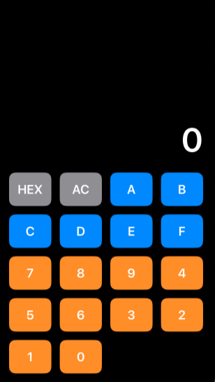

Seeking a position in the computer and networking technology field where they can apply their strong technical skills and experience to contribute to the company's growth and success. Committed to providing innovative solutions and leveraging deep knowledge in network technology and computer systems to enhance the organization's efficiency, security, and productivity.
February 2025 – April 2025
• AVAL Resources, Ponce, PR • 40 hrs. week
Supervisor: Steven Lozada, (787) 631-1273
Duties:
2021 – June 2021 • Grand Way, Salinas, PR • 20 hrs. week
Supervisor: Julia Navarro, (787) 824-8347
Duties:
June 2017 – June 2017 Bambalin Party Shop, Salinas, PR • 20 hrs. week
Supervisor: Cristina, (787) 824-4786
Duties:
Major: Network & Security Specialty
Expected Graduation: May 2027
Inter American University of Puerto Rico, Guayama, PR
Graduated: May 2024
Inter American University of Puerto Rico, Guayama, PR
August-December 2021
100-hour Intership at the Technology Solution Del Sur & More
InterAmerican University, Guayama, PR
August-December 2023
100-hour Internship at the Center for Information Technology, Telecommunications, and Online
Education (CITEL),
InterAmerican University, Guayama, PR
Demonstrates rapid acquisition of new skills, fluency in English and Spanish, strong communication
abilities, and organizational proficiency.
I certify that I can type over 50 words per minute and am proficient with a range of automated systems
and computer programs, including MS Office Suite, Mac iWork Suite, SharePoint, Visio, VSSC, various
databases, Defense Travel System, Concur, Leads reports, USA Jobs Resume Mining Tool, USA Staffing,
and Selection Manager.
